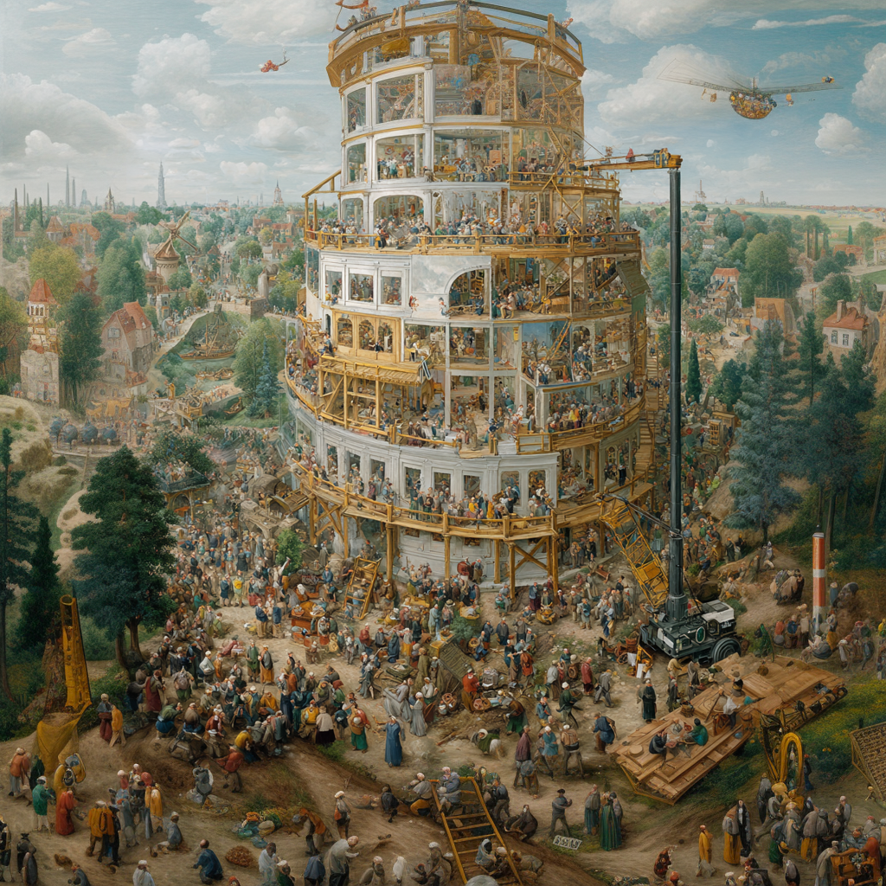
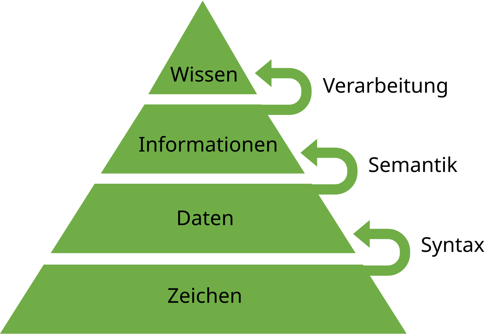
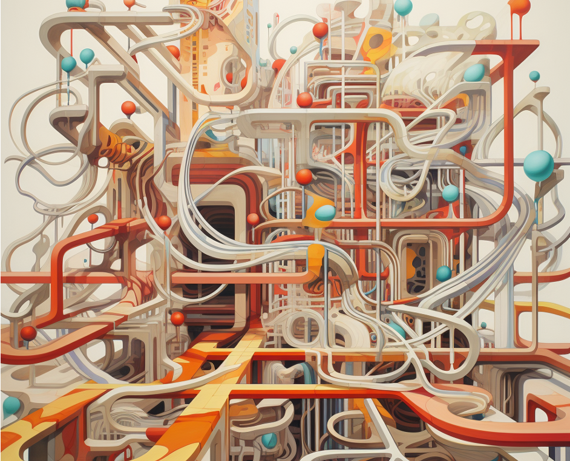

def division(zaehler, nenner):
if not isinstance(nenner, (int, float)):
raise TypeError(f"Nenner nicht vom Datentyp `int` oder `float`")
elif not isinstance(zaehler, (int, float)):
raise TypeError(f"Zaehler nicht vom Datentyp `int` oder `float`")
elif nenner == 0:
print("Warnung Division durch 0")
return None
else:
ergebnis = zaehler / nenner
print(f"Das Ergebnis von {zaehler}/{nenner} = {ergebnis}")
return ergebnisExceptions
Joern Ploennigs · AI4SC
Midjourney: Exception in Time, ref. Salvador Dalí
Hörsaalfrage
Welche Ebenen hat die Wissenspyramide?

Wiederholung: Wissenspyramide
Die Wissenspyramide ist ein Modell zur Darstellung der Entstehung von Wissen.
Die vier Elementtypen: Zeichen, Daten, Informationen und Wissen werden pyramidenförmig als 4 Ebenen dargestellt.
Zeichen formen die Basis und das Wissen die Spitze der Pyramide.

Hörsaalfrage
Was sind die vier Grundelemente eines Programms?

Wiederholung: Programmelemente
- Wir kennen alle grundlegenden Grundelemente eines Programms:
- Statements
- Funktionen
- Verzweigungen
- Schleifen & Rekursion
- Wir wissen wie man Algorithmen plant und diese Elemente kombinieren kann.
Hörsaalfrage
Du führst 200 Zeilen KI-Code aus und erhältst: TypeError: 'NoneType' object is not iterable — was tust du zuerst?

KI-Code wirft eine Exception
Szenario: KI generiert eine Analyse-Funktion für Sensordaten.
Beim Ausführen:
TypeError: 'NoneType' object is not iterableDie KI hat stillschweigend angenommen: hole_messungen() gibt immer eine Liste zurück.
Tracebacks: Den Aufrufstapel lesen
Traceback-Analyse
Traceback von unten nach oben lesen:
- Unterste Zeile — die Stelle, die abgestürzt ist
- Exception-Typ — welche Annahme verletzt wurde
- Fehlermeldung — welcher konkrete Wert das ausgelöst hat
- Aufwärts — der Aufrufpfad bis zum Startpunkt
Traceback (most recent call last):
File "analyse.py", line 9 ← Startpunkt
berechne_mittleren_durchfluss(...)
File "analyse.py", line 7 ← Absturz
return sum(messungen) / ...
TypeError: 'NoneType' object is not iterable ← Verletzte AnnahmeTraceback = Aufrufliste eingefroren im Fehlermoment
Traceback lesen: Beispiel zum KI-Fehler
- Unterste Zeile:
TypeErrorbedeutet, dass ein Wert nicht zur Operation passt. - Fehlermeldung:
'NoneType' object is not iterablezeigt, dasssum()kein iterierbares Objekt erhalten hat. - Absturzstelle: In
berechne_mittleren_durchfluss()wurdesum(messungen)aufgerufen. - Rückwärts fragen: Woher kam
messungen? Aushole_messungen(sensor_id). - Annahme finden: Die KI hat angenommen, dass
hole_messungen()immer eine Liste liefert.
Guard Clauses: KI prüft Vorbedingungen oft nicht
KI-Code ohne Guard Clauses:
Guard Clauses: Welche Annahme hat die KI gemacht?
- Frage beim KI-Code-Review: Welche Eingaben nimmt die KI stillschweigend an?
- Rückgabewert ist nie
None - Liste ist nie leer
- Zahl ist nie
0(Division) - Objekt hat immer das erwartete Attribut
- Rückgabewert ist nie
- Guard Clauses schützen riskante Operationen:
- vor Division:
if nenner == 0 - vor Attributzugriff:
if obj is None - vor Listenoperationen:
if not liste
- vor Division:
Agentic Workflow: KI-Exception → Reprompt
Agentic Cycle — Exception-Diagnose
- Traceback lesen — welche Zeile ist abgestürzt?
- Annahme identifizieren — was hat die KI stillschweigend erwartet?
- Guard Clause hinzufügen oder Daten korrigieren — Vorbedingung explizit prüfen
- Reprompt — Constraint explizit formulieren:
“Die Funktion
hole_messungen()kannNonezurückgeben wenn der Sensor nicht existiert. Behandle diesen Fall.”
Warum macht KI-generierter Code Fehler?
Ungewollte Fehler entstehen durch:
- falsche Annahmen weil Anforderungen nicht vollständig bekannt
- KI kennt den konkreten Anwendungskontext nicht
- KI lässt Vorbedingungsprüfungen häufig weg
Exceptions helfen bei der Diagnose:
- Exceptions zeigen welche Annahme verletzt wurde
- Der Traceback zeigt wo und durch welchen Wert
- Jede Exception ist ein Hinweis auf eine fehlende Constraint im Prompt
Klassen von Fehlern
Entlang der Wissenspyramide:
- Lexikalisch – Code enthält ungültige Zeichen oder Zeichenketten
- Syntaktisch – Code kombiniert lexikalisch gültige Wörter in ungültiger Weise
- Semantisch – Code ist syntaktisch gültig, aber stürzt ab oder liefert keine Ergebnisse
- Logisch – Code ist semantisch gültig, aber löst das gegebene Problem nicht
Andere Klassifizierungen von Fehlern
Nach Häufigkeit und Reproduzierbarkeit:
- Deterministische Fehler — treten immer auf und lassen sich reproduzieren
- Sporadische Fehler — treten nur selten und in besonderen Zuständen auf
Nach Auftreten:
- Statische Fehler — direkt im geschriebenen Code erkennbar
- Dynamische Fehler — treten erst beim Ausführen des Programms auf
Lexikalische & Syntaktische Fehler
- Sind in den meisten Fällen statisch und deterministisch
- Erzeugen immer eine Fehlermeldung
- Schon in IDE, beim Compilieren oder nach dem Ausführen
- Diese Fehlermeldungen können allerdings trügerisch sein!
Lexikalische & Syntaktische Fehler — Beispiele
- Ein Schlüsselwort ist falsch geschrieben
- Nicht geschlossene Anführungszeichen oder Klammern
- Einen Doppelpunkt nach einer Bedingung oder Funktion vergessen
- Falsche Einrückung nach einer Bedingung, Schleife oder Funktion
- Ggf. auch falsches Einrücken durch Tabs vs. Leerzeichen
Lexikalische & Syntaktische Fehler — Behandlung
- Erster Blick: In welcher Zeile ist der Fehler aufgetreten?
- Gibt der Text der Fehlermeldung einen Hinweis?
- Liegt der Fehler in der Zeile oder ist der Fehler nur ein Symptom und der Fehler liegt in einer Zeile davor?
- Normalerweise einfach zu beheben — von der Fehlerzeile den Code Zeile für Zeile rückwärts durchgehen
Semantische Fehler — Grundlagen
- Entstehen durch die fehlerhafte Anwendung von syntaktisch korrekten Programmstrukturen auf ein bestimmtes Problem
- Erkennbare Fehler — weiß man, dass sie auftreten können (Division durch Null, fehlender Sensor)
- Sollten immer abgefangen und behandelt werden
- Unerkannte Fehler — beim Erstellen des Programms unbekannt; deutlich schwieriger abzufangen
Semantische Fehler — Beispiele
Eine Variable wird als Funktion aufgerufen (statisch, deterministisch)
Ein Operator wird mit einem Wert des falschen Typs genutzt (statisch oder dynamisch, deterministisch)
Ein Wert des falschen Typs wird in eine Funktion übergeben (statisch oder dynamisch, deterministisch)
Es geschieht eine Division durch 0 (dynamisch, deterministisch)
Semantische Fehler — Behandlung
Traceback-Analyse
Erster Schritt: Traceback verstehen
- Unterste Zeile: Wo ist der Code abgestürzt?
- Exception-Typ: Welche Annahme wurde verletzt? (
TypeError,AttributeError,ZeroDivisionError…) - Aufwärts: Wer hat den fehlerhaften Wert übergeben?
- Fehlermeldung: Welcher konkrete Wert hat das Problem ausgelöst?
Bei KI-Code: Welche stillschweigende Annahme hat die KI über diesen Wert gemacht?
:::::
Logische Fehler — Grundlagen
Entstehen durch:
- Fehler in der Programmlogik
- Ein falsches mentales Modell
- Einen grundlegenden Fehler im Programmentwurf
Charakteristika:
- Erzeugen nur selten Exceptions — stattdessen falsches Verhalten oder falsche Ergebnisse
- Bleiben oft unentdeckt und treten erst dynamisch auf
- Können deterministisch oder sporadisch sein
Logische Fehler — Beispiele
Deterministische Fehler:
- Verwendung eines falschen Faktors in einer Einheitenkonvertierung
- Verwenden der falschen Art von Schleife oder falsche Schachtelung
- Verwenden einer falschen Zeitzone beim Schreiben von Sensor-Daten
Sporadische Fehler:
- Probleme mit Sommer-/Winterzeitkonvertierung bei Sensor-Daten
- Die Bedingung in einer Schleife hat Fälle, in der sie immer True ist und so endlos wird
Logische Fehler — Behandlung
Testfälle erstellen um zu reproduzieren wann und wie unerwartetes Verhalten stattfindet
→
08a_UnitTest(S08): Tests fangen Exception-Fälle bevor sie in Produktion gelangenDebugging-Tools nutzen um Ausführung Schritt für Schritt nachzuvollziehen
→
07b_Debugging(S07): Debugger, Breakpoints, Schritt-für-Schritt-Analyse
Zusatz: Warnungen in der IDE
- Weisen auf Code hin, der syntaktisch und semantisch korrekt scheint, seinen Zweck aber wahrscheinlich nicht erfüllen wird
- Basieren auf Erfahrungswerten
- Können dabei helfen semantische und logische Fehler frühzeitig zu erkennen
Questions

Artificial
Intelligence